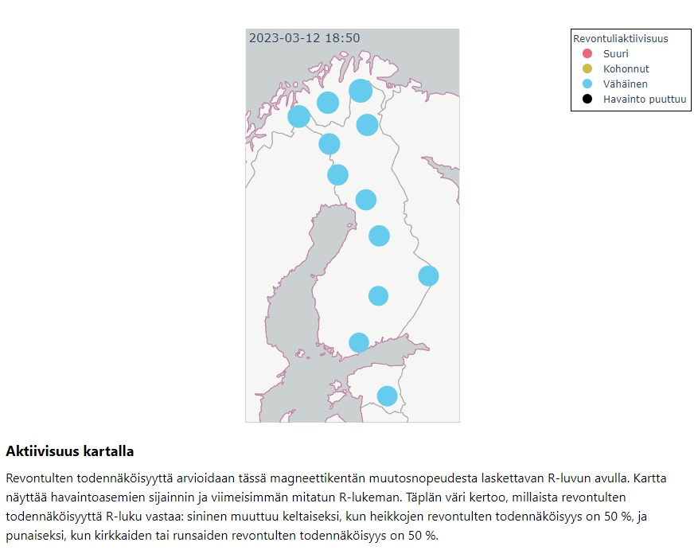

Ajantasaista tietoa:
- Revontulet ja avaruussää, Ilmatieteenlaitos
- Avaruussää, Avaruussääkeskus
- Revontuliennuste, Sääasema Pertteli
- Ennustaminen ja seuranta, Ursa
Havainto sijainnit:
Alla oleva kuva näyttää revontulien mittauspaikat sekä sen, millä todennäköisyydellä kyseisessä sijainnissa voidaan nähdä revontulia. Ajantasaisen kartan revontulien todennäköisyydestä löydät Ajantasaista tietoa -kohdan linkeistä.
